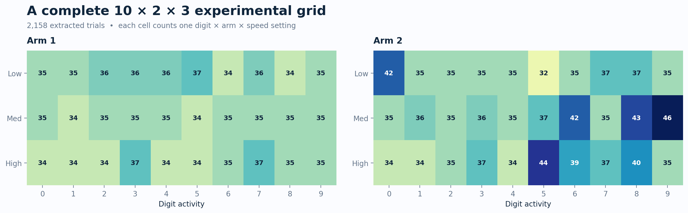
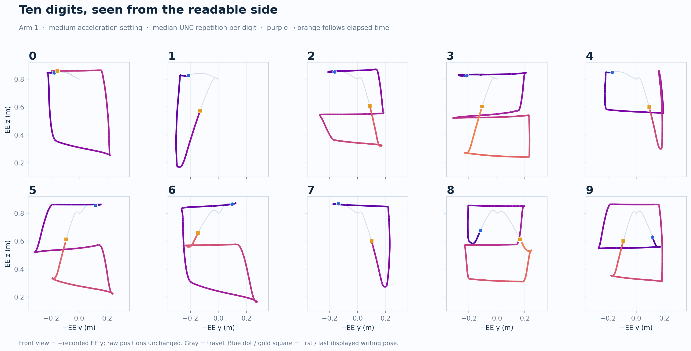
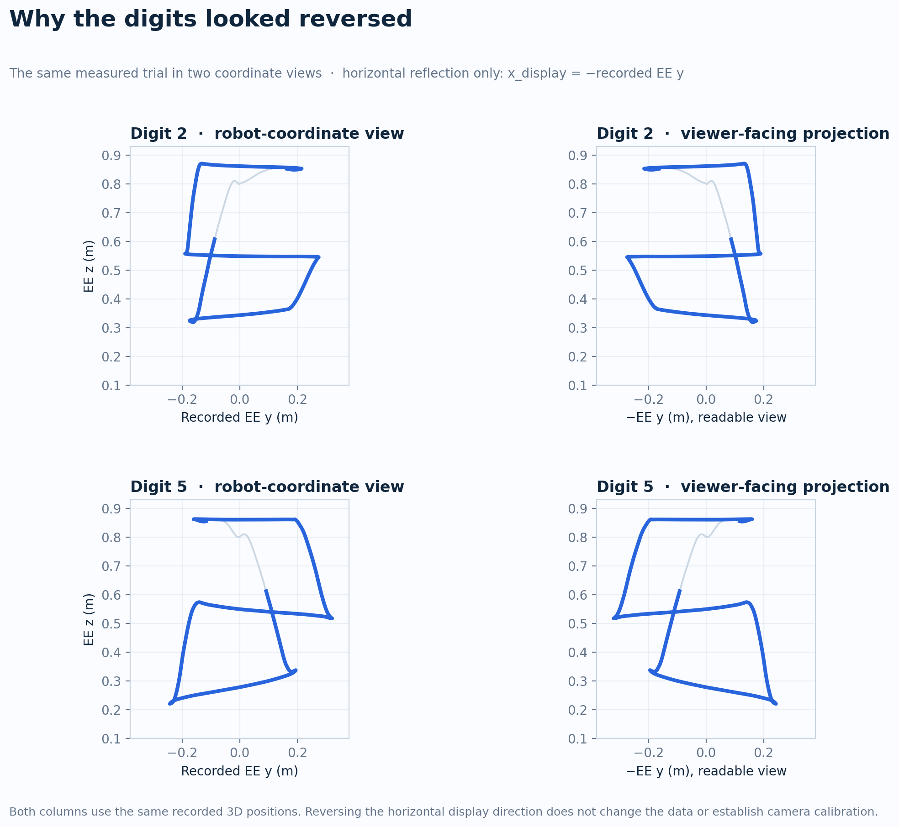
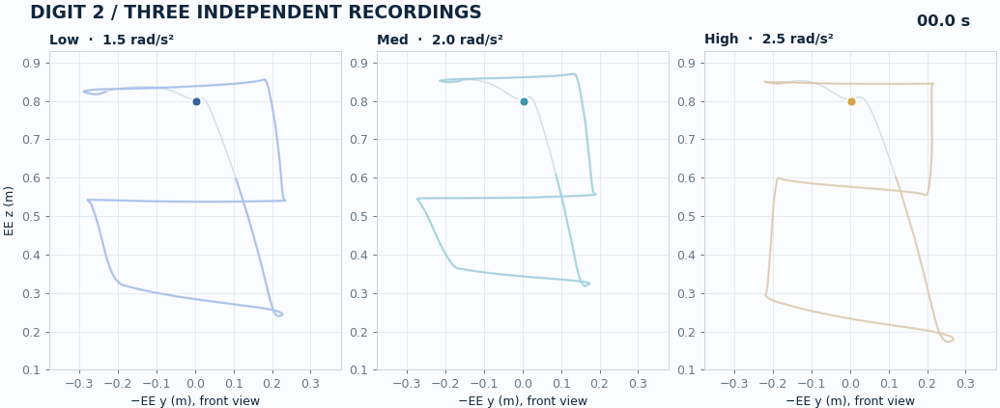
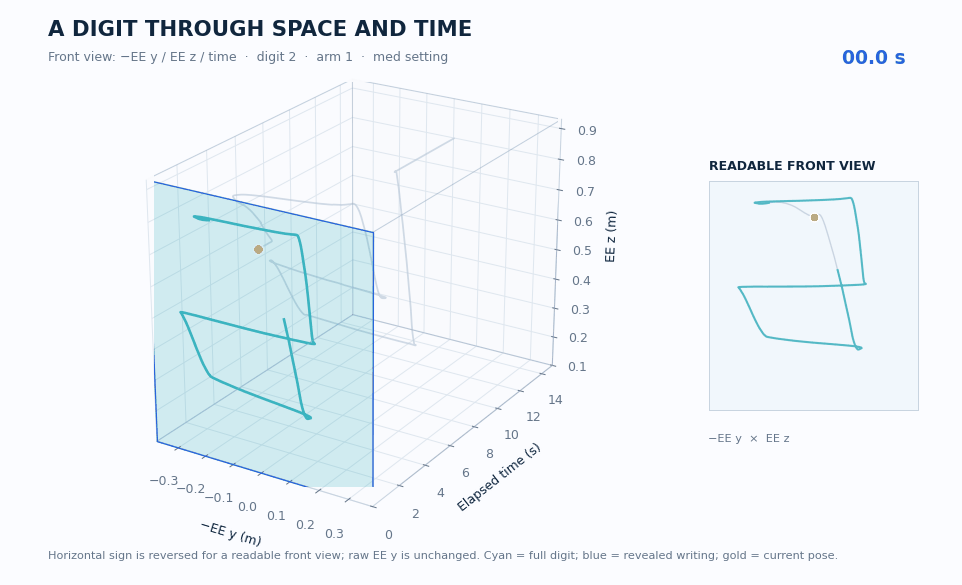
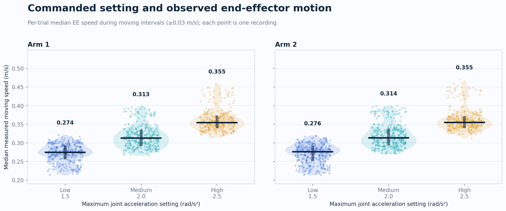
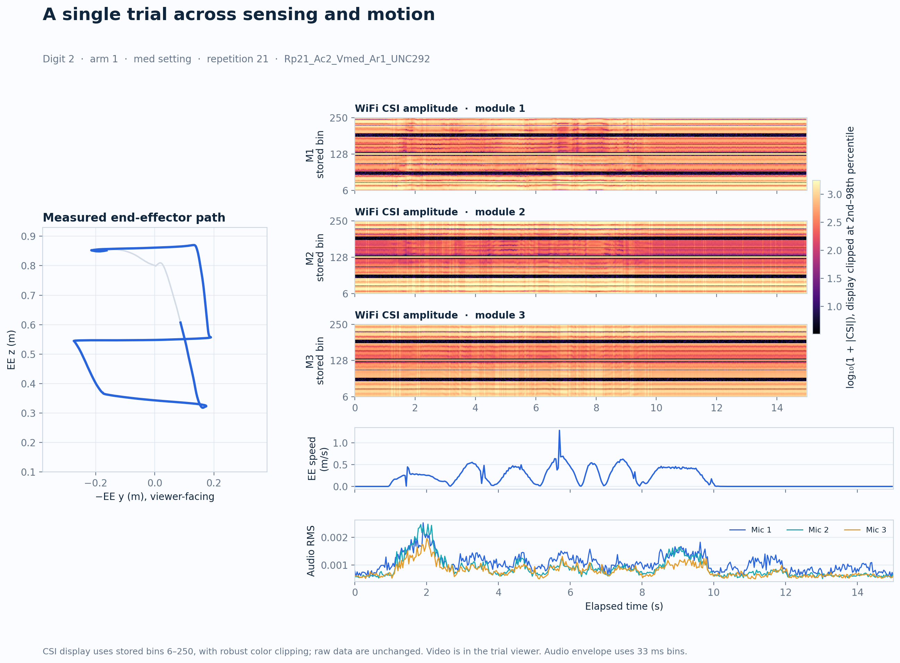
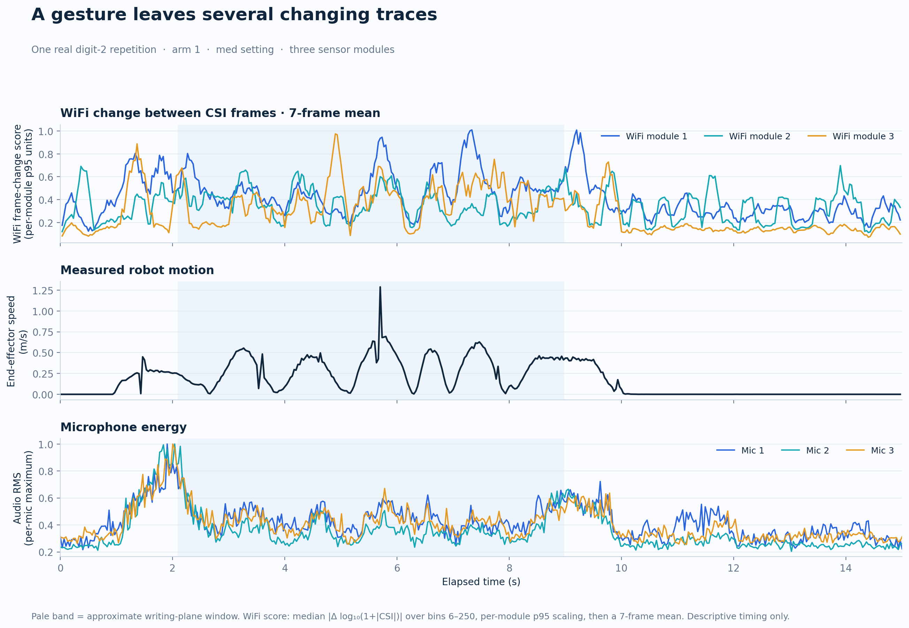
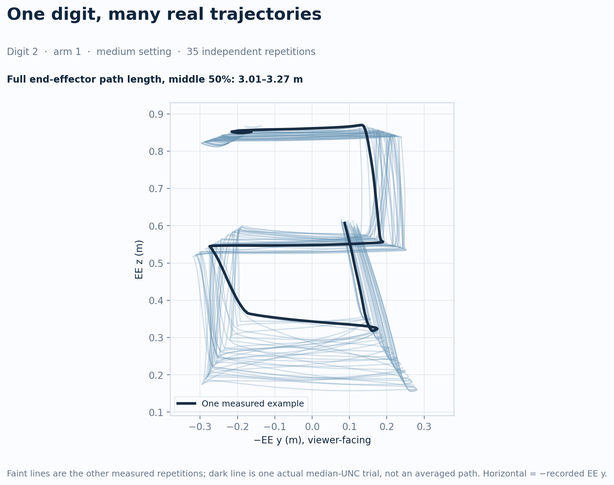

A digit written by robots. Seen from every signal.
One of two robotic arms draws a digit from 0–9 in each trial. Three sensor modules record stereo video, WiFi channel state, and sound, alongside measured robot trajectories. Explore what one gesture looks like across time and sensing modalities.
Real RoboMNIST trial · digit 2 · arm 1 · med motion setting · module 1 stereo preview
Start with the question you want to ask.
Each view opens a real recording. The same measured motion can be explored as a robot action, a path through time, or a set of sensor signals.
Try a recording.
Switch among curated examples to see how the digit, active arm, and commanded motion setting change the visible action.
In each 3D viewer, change camera module, drag to orbit, switch room views, and scrub the shared time control. The room is illustrative; the trajectory and robot joint angles are recorded.
A full grid of gestures, viewpoints, and motion settings
Every one of the 60 primary combinations is represented in this local extraction, with 32–46 independently recorded repetitions per combination.

Cell values are recording counts. The 10 activities are digits; the 60 cells combine digit, active arm, and commanded setting.
The digit lives in the trajectory
The trajectories are shown from the readable side: horizontal = −recorded EE y, vertical = EE z. Only the display direction changes; raw positions remain intact. Gray lines show travel; color marks an approximate writing segment.


The same recorded paths viewed from opposite sides. The front view reverses only the displayed horizontal direction; the source positions are unchanged.
Same digit, different timing

The settings cap joint acceleration. In this local analysis, arm 1 median measured moving speed rises from 0.274 to 0.355 m/s between low and high settings.
One path through time

The front view uses −EE y and measured EE z in metres; depth is elapsed seconds. Orbit the interactive cube →

The full per-trial speed distributions behind the animation. Each point is one recording, and the dark bar marks its group median.
One repetition, multiple physical signals
WiFi CSI amplitude, audio energy, and measured motion change over the same 15-second recording. The three modules reveal different views of one event.

Inspect the actual recording
The interactive trial viewer links the camera, end-effector path, WiFi CSI, audio envelope, and received signal strength to one elapsed-time control.
Display-only CSI bin selection and color clipping are documented; raw files remain unchanged.

A single recorded repetition viewed through three changing signals. The pale band marks an approximate writing window; WiFi change is a descriptive score, not classifier evidence.
Real repetitions, visible variation
The dataset includes many independent realizations per condition. Overlaying one digit’s measured paths exposes the range of motion variation available for robust recognition research.

Designed for research, ready to inspect
Download the trial manifest and derived metrics, regenerate figures for another digit or arm, and choose a different recording for the 3D cube.
Trial manifest CSV · Trajectory metrics CSV · Reading guide
Faint paths are independent measured repetitions; the dark path is one actual trial. The display compares shape variation without assigning meaning to the filename uncertainty value.
Get the data and methods
Original visuals generated from the RoboMNIST dataset by Behzad and colleagues. The dataset page lists CC BY; the related article has a separate CC BY-NC-ND 4.0 license. No article figures or trained-model results are represented here.
Cite RoboMNIST when you use it.
The dataset and paper have separate persistent identifiers. Use the dataset DOI for data or visuals derived from it, and cite the article when discussing its design and methods.
Dataset · Figshare
Behzad, K., Zandi, R., Motamedi, E., Salehinejad, H. & Siami, M. RoboMNIST: A Multimodal Dataset for Multi-Robot Activity Recognition Using WiFi Sensing, Video, and Audio. Figshare (2025).
Article · Scientific Data
Behzad, K., Zandi, R., Motamedi, E., Salehinejad, H. & Siami, M. RoboMNIST: A Multimodal Dataset for Multi-Robot Activity Recognition Using WiFi Sensing, Video, and Audio. Scientific Data 12, 326 (2025).
Ready to reuse
Copy a one-line credit for slides and posts, or BibTeX for a reference manager. The text remains selectable if clipboard access is unavailable.
Visualization derived from RoboMNIST (Behzad et al.), dataset DOI: 10.6084/m9.figshare.28179383.
Show BibTeX for the dataset and article
@misc{behzad2025robomnist_dataset,
author = {Behzad, Kian and Zandi, Rojin and Motamedi, Elaheh and Salehinejad, Hojjat and Siami, Milad},
title = {RoboMNIST: A Multimodal Dataset for Multi-Robot Activity Recognition Using WiFi Sensing, Video, and Audio},
publisher = {Figshare},
year = {2025},
doi = {10.6084/m9.figshare.28179383},
url = {https://doi.org/10.6084/m9.figshare.28179383}
}
@article{behzad2025robomnist,
author = {Behzad, Kian and Zandi, Rojin and Motamedi, Elaheh and Salehinejad, Hojjat and Siami, Milad},
title = {RoboMNIST: A Multimodal Dataset for Multi-Robot Activity Recognition Using WiFi Sensing, Video, and Audio},
journal = {Scientific Data},
volume = {12},
pages = {326},
year = {2025},
doi = {10.1038/s41597-025-04636-2},
url = {https://doi.org/10.1038/s41597-025-04636-2}
}